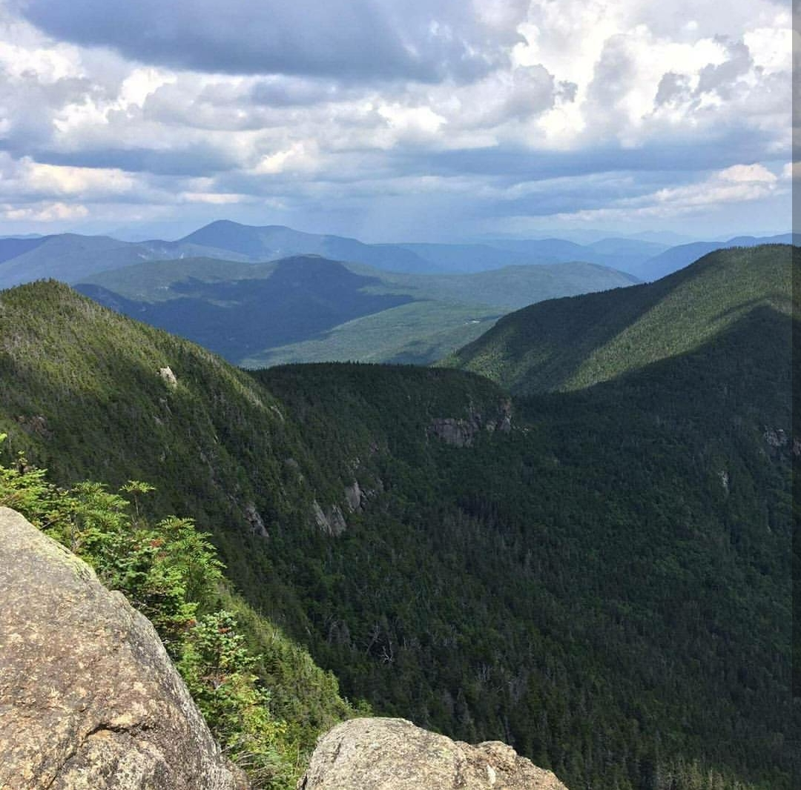
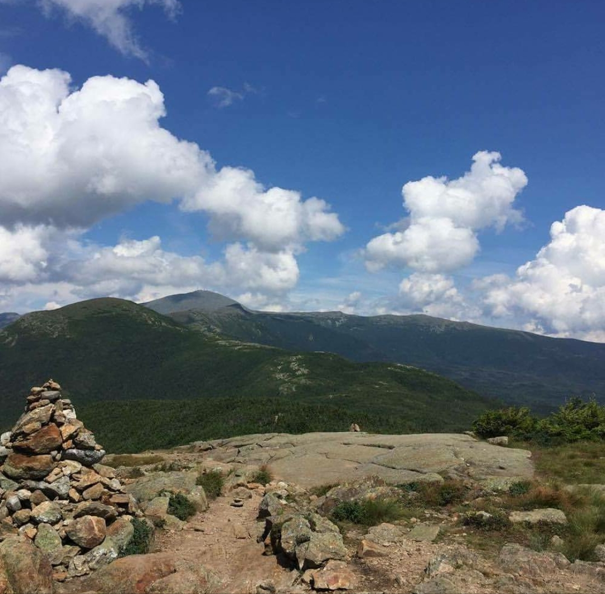
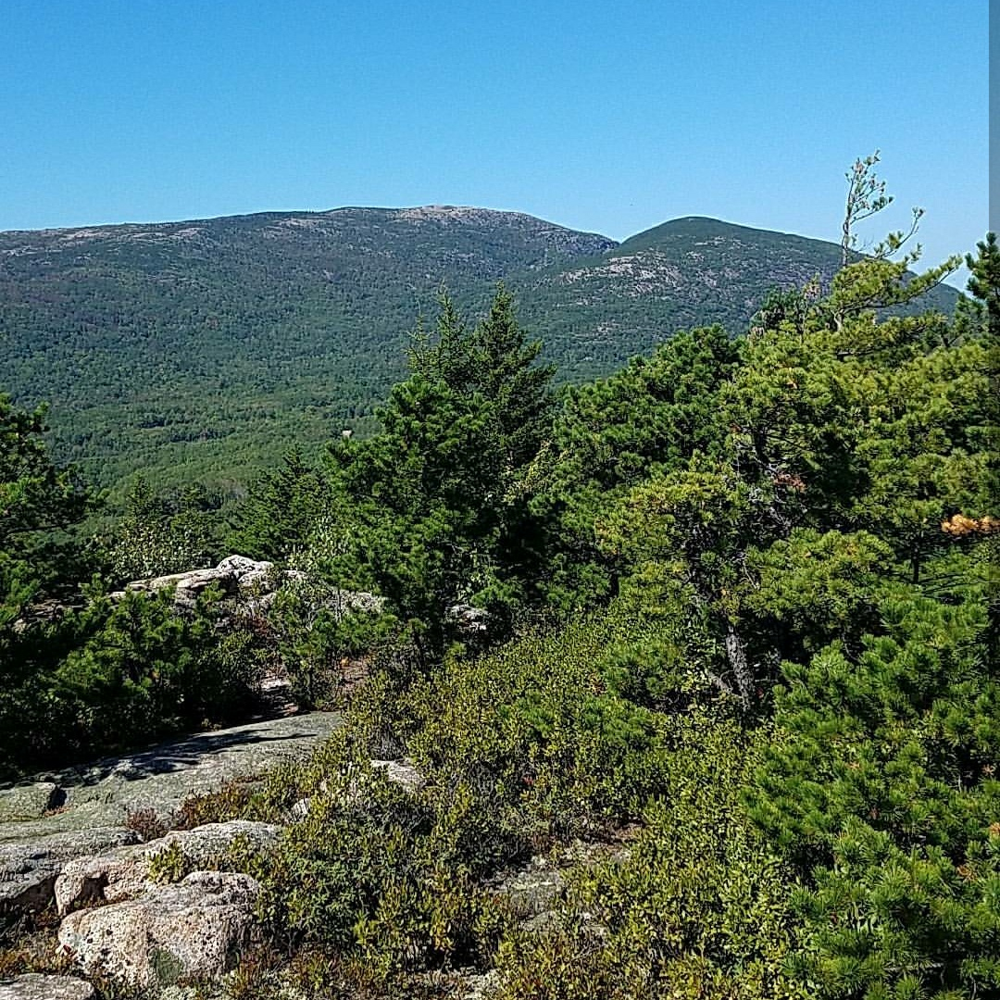

Hiking



I first developed by passion for hiking when I was ten, and my family took me hiking up Mount Wattatic in Central Mass. It was only a short forty minute hike but since then I've gone up mountains all over the East coast. Here are some pictures that I took from Mount Washington, Mount Osceola, and Mount Katahdin. I hope to eventually cover many more mountain ranges across the U.S.
Homepage